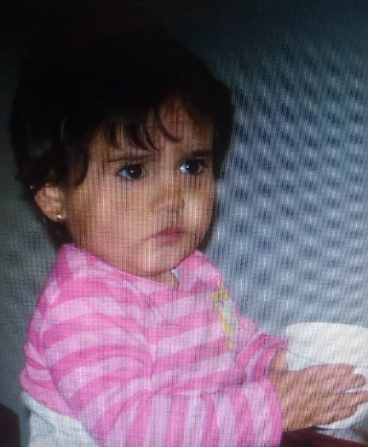
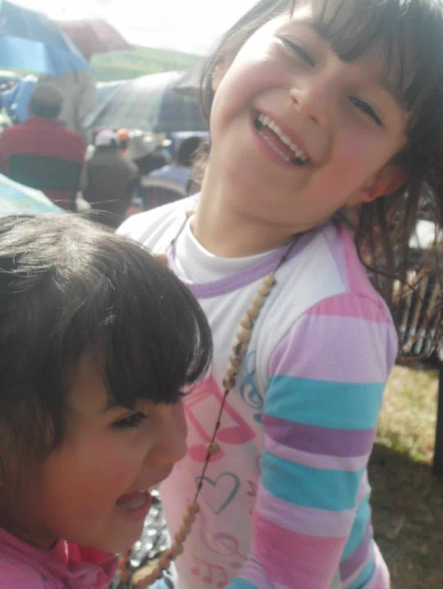
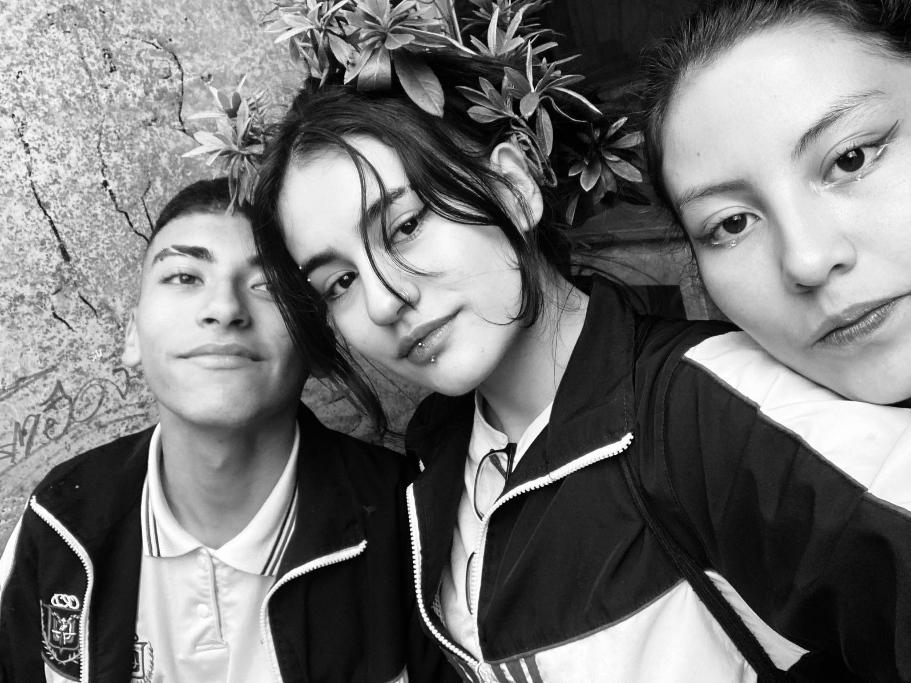
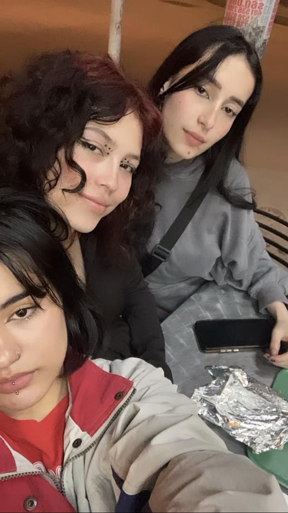
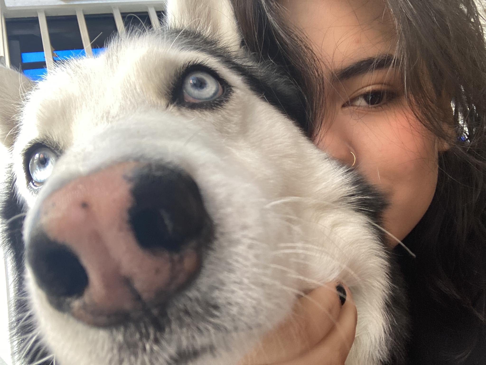

Nací el 12 de septiembre de 2007 en la ciudad de Bogotá. Mi familia está conformada por mi padre, Edwin Murcia, mi madre, Alba López, y mi hermana mayor, Juana. A mis 10 años, se unió un nuevo miembro a nuestra familia: mi perro Dante. Durante mi niñez y adolescencia, viví con mis padres y mi hermana en Bogotá. En mis primeros cinco años, residí en la zona de la Primera de Mayo, pero, debido a razones económicas, mis padres decidieron trasladarse a Suba, marcando así el inicio de una nueva etapa en mi vida.
El ingreso al colegio República Dominicana fue un momento destacado de esta nueva etapa. Recuerdo los días en los que disfrutaba jugando en el colegio y las tardes después de clases en casa con mis primos. Mi pasatiempo favorito era crear cosas con mis manos: juguetes, ropa, casas y cualquier cosa de mi imaginació
Mi preadolescencia resultó ser una etapa complicada para mí. En 2020, a la edad de 12 años, el anuncio del confinamiento debido al COVID-19 . Lo que pensamos que sería un encierro de corta duración se extendió a dos años de aislamiento. Durante este tiempo, pasé por situaciones difíciles tanto con mi familia como conmigo misma. A nivel académico, no fueron mis mejores años; sin embargo, no todo fue negativo. Durante este tiempo, descubrí mi pasión por la pintura y el dibujo, así como mi interés por la programación, animada por mi padre.
     Volver al inicio